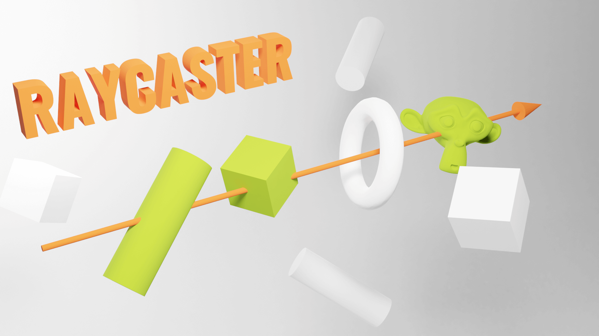
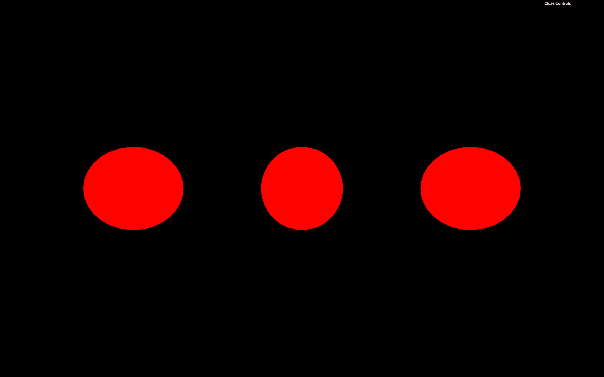
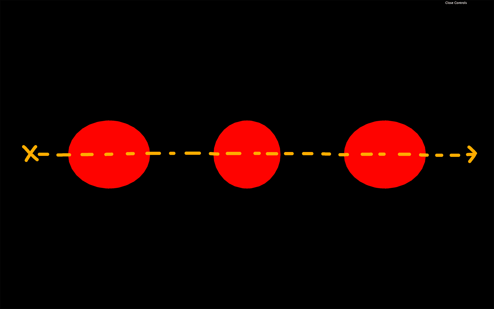
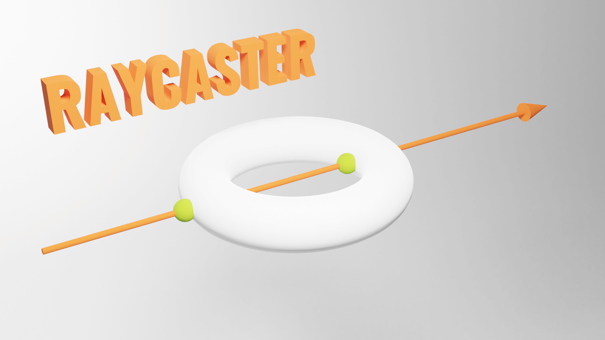

As the name suggests, a Raycaster can cast (or shoot) a ray in a specific direction and test what objects intersect with it.

You can use that technique to detect if there is a wall in front of the player, test if the laser gun hit something, test if something is currently under the mouse to simulate mouse events, and many other things.
In our starter, we have 3 red spheres, and we are going to shoot a ray through and see if those spheres intersect.

Instantiate a Raycaster:
To change the position and direction where ray will be cast, we can use the set(...) method. The first parameter is the position and the second parameter is the direction.
Both are Vector3, but the direction has to be normalized. A normalized vector has a length of 1. Don't worry, you don't have to do the mathematics by yourself, and you can call the normalize() method on the vector:
This example of a normalized vector isn't very relevant because we could have set 1 instead of 10, but if we change the values, we will still have the normalize() method making sure that the vector is 1 unit long.
Here, the ray position supposedly start a little on the left in our scene, and the direction seems to go to the right. Our ray should go through all the spheres.

To cast a ray and get the objects that intersect we can use two methods, intersectObject(...) (singular) and intersectObjects(...) (plural).
intersectObject(...) will test one object and intersectObjects(...) will test an array of objects:
If you look at the logs, you'll see that intersectObject(...) returned an array of one item (probably the second sphere) and intersectObjects(...), returned an array of three items (probably the 3 spheres).
The result of an intersection is always an array, even if you are testing only one object. That is because a ray can go through the same object multiple times. Imagine a donut. The ray will go through the first part of the ring, then the middle's hole, then again the second part of the ring.

Each item of that returned array contains much useful information:
distance: the distance between the origin of the ray and the collision point.face: what face of the geometry was hit by the ray.faceIndex: the index of that face.object: what object is concerned by the collision.point: a Vector3 of the exact position in 3D space of the collision.uv: the UV coordinates in that geometry.It's up to you to use that data. If you want to test if there is a wall in front of the player, you can test the distance. If you're going to change the object's color, you can update the object's material. If you want to show an explosion on the impact point, you can create this explosion at the point position.
Currently, we only cast one ray at the start. If we want to test things while they are moving, we have to do the test on each frame. Let's animate the spheres and turn them blue when the ray intersects with them.
Remove the code we did previously and only keep the raycaster instantiation:
Animate the spheres by using the elapsed time and classic Math.sin(...) in the tick function:
You should see the spheres waving up and down at different frequencies.
Now let's update our raycaster like we did before but in the tick function:
Yet again, we don't really need to normalize the rayDirection because its length is already 1. But it's good practice to keep the normalize() in case we change the direction.
We also put the array of objects to test in a variable objectsToTest. That will get handy later.
If you look at the console, you should get an array with intersections in it, and those intersections keep changing depending on the spheres' positions.
We can now update the material of the object property for each item of the intersects array:
Unluckily, they all go blue but never go back red. There are many ways to turn the objects that didn't intersect back to red. What we can do is turn all the spheres red and then turn the ones that intersect blue:
As we said earlier, we can also use the raycaster to test if an object is behind the mouse. In other words, if you are hovering an object.
Mathematically speaking, it's a little complex because we need to cast a ray from the camera in the mouse's direction, but, fortunately, Three.js is doing all the heavy lifting.
For now, let's comment the code related to the raycaster in the tick function.
First, let's handle hovering.
To begin with, we need the coordinates of the mouse. We cannot use the basic native JavaScript coordinates, which are in pixels. We need a value that goes from -1 to +1 in both the horizontal and the vertical axis, with the vertical coordinate being positive when moving the mouse upward.
This is how WebGL works and it's related to things like clip space but we don't need to understand those complex concepts.
Examples:
-1 / 1-1 / - 11 / 00 / 0First, let's create a mouse variable with a Vector2, and update that variable when the mouse is moving:
Look at the logs and make sure that the values match the previous examples.
We could cast the ray in the mousemove event callback, but it's not recommend because the mousemove event might be triggered more than the frame rate for some browsers. Instead, we will cast the ray in the tick function as we did before.
To orient the ray in the right direction, we can use the setFromCamera() method on the Raycaster. The rest of the code is the same as before. We just update the objects materials to red or blue if they intersect or not:
The spheres should become blue if the cursor is above them.
Mouse events like 'mouseenter', 'mouseleave', etc. aren't supported either. If you want to be inform when the mouse "enters" an object or "leaves" that object, you'll have to do it by yourself.
What we can do to reproduce the mouseenter and mouseleave events, is to have a variable containing the currently hovered object.
If there is one object intersecting, but there wasn't one before, it means a mouseenter has happened on that object.
If no object intersects, but there was one before, it means a mouseleave has happened.
We just need to save the currently intersecting object:
And then, test and update the currentIntersect variable:
Now that we have a variable containing the currently hovered object, we can easily implement a click event.
First, we need to listen to the click event regardless of where it happens:
Then, we can test if the there is something in the currentIntersect variable:
We can also test what object was concerned by the click:
Reproducing native events takes time, but once you understand it, it's pretty straightforward.